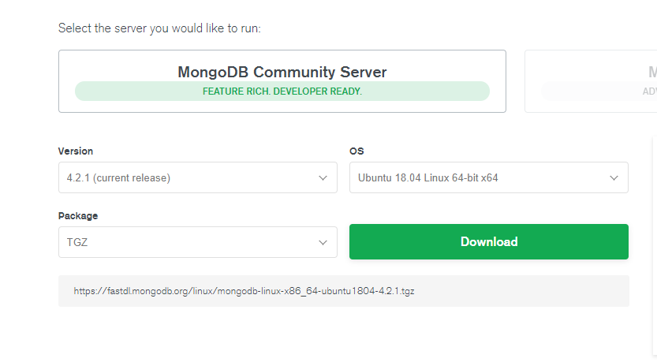

MongoDB单机部署
准备工作
- 首先查看系统信息
cat /proc/cpuinfo | grep name | cut -f2 -d: | uniq -c cat /proc/version - 去官网下载和系统信息对应的版本，选择TGZ格式。 
- 安装部署
cd /usr/local/bin mkdir mongodb cd mongodb curl -O https://fastdl.mongodb.org/linux/mongodb-linux-x86_64-ubuntu1804-4.2.1.tgz tar -xzvf mongodb-linux-x86_64-ubuntu1804-4.2.1.tgz ln -s mongodb-linux-x86_64-ubuntu1804-4.2.1 mongodb 环境配置
vim /etc/profile export MONGODB_HOME=/usr/local/bin/mongodb/mongodb export PATH=$PATH:$MONGODB_HOME/bin添加用户
在用户目录下添加工作空间
mkdir -p /home/mongodb/stand-alone/data mkdir -p /home/mongodb/stand-alone/log cd /home/mongodb/stand-alone/log touch log.log启动方式一
- 启动服务
mongod --dbpath=/home/mongodb/stand-alone/data --logpath=/home/mongodb/stand-alone/log/log.log --logappend mongod --dbpath=/home/mongodb/stand-alone/data --logpath=/home/mongodb/stand-alone/log/log.log --logappend --bind_ip_all --port=27017 mongod --dbpath=/home/mongodb/stand-alone/data --logpath=/home/mongodb/stand-alone/log/log.log --logappend --bind_ip_all --port=27017 --fork mongod --dbpath=/home/mongodb/stand-alone/data --logpath=/home/mongodb/stand-alone/log/log.log --logappend --bind_ip_all --port=27017 --fork --auth - 设置服务开机启动
echo "mongod --dbpath=/home/mongodb/stand-alone/data –logpath=/home/mongodb/stand-alone/log/log.log –logappend --bind_ip_all -–port=27017 --fork" >> /etc/rc.local - 关闭服务
mongod --shutdown --dbpath=/home/mongodb/stand-alone/data - 启动客户端
mongo mongo --host=127.0.0.1 --port=27017
- 启动服务
启动方式二
- 在实例目录下编制配置文件，如命名为/home/mongodb/stand-alone/mongod.config，保存为utf8格式
- 添加如下配置信息到文件中
dbpath=/home/mongodb/stand-alone/data logpath=/home/mongodb/stand-alone/log/log.log logappend = true port=27017 fork=true #bind_ip = 0.0.0.0 journal=true quiet=true 启动服务
mongod -f /home/mongodb/stand-alone/mongod.config其他配置信息可以参考 mongo -h
|参数|含义| |---|---| |quiet | 安静输出 | |port arg | 指定服务端口号，默认端口27017 | |bind_ip arg | 绑定服务IP，若绑定127.0.0.1，则只能本机访问，不指定默认本地所有IP | |logpath arg | 指定MongoDB日志文件，注意是指定文件不是目录 | |logappend | 使用追加的方式写日志 | |pidfilepath arg | PID File 的完整路径，如果没有设置，则没有PID文件 | |keyFile arg | 集群的私钥的完整路径，只对于Replica Set 架构有效 | |unixSocketPrefix arg | UNIX域套接字替代目录,(默认为 /tmp) | |fork | 以守护进程的方式运行MongoDB，创建服务器进程 | |auth | 启用验证 | |cpu | 定期显示CPU的CPU利用率和iowait | |dbpath arg | 指定数据库路径 | |diaglog arg | diaglog选项 0=off 1=W 2=R 3=both 7=W+some reads | |directoryperdb | 设置每个数据库将被保存在一个单独的目录 | |journal | 启用日志选项，MongoDB的数据操作将会写入到journal文件夹的文件里 | |journalOptions arg | 启用日志诊断选项 | |ipv6 | 启用IPv6选项 | |jsonp | 允许JSONP形式通过HTTP访问（有安全影响） | |maxConns arg | 最大同时连接数 默认2000 | |noauth | 不启用验证 | |nohttpinterface | 关闭http接口，默认关闭27018端口访问 | |noprealloc | 禁用数据文件预分配(往往影响性能) | |noscripting | 禁用脚本引擎 | |notablescan | 不允许表扫描 | |nounixsocket | 禁用Unix套接字监听 | |nssize arg (=16) | 设置信数据库.ns文件大小(MB) | |objcheck | 在收到客户数据,检查的有效性， | |profile arg | 档案参数 0=off 1=slow, 2=all | |quota | 限制每个数据库的文件数，设置默认为8 | |quotaFiles arg | number of files allower per db, requires --quota| |rest | 开启简单的rest API | |repair | 修复所有数据库run repair on all dbs | |repairpath arg | 修复库生成的文件的目录,默认为目录名称dbpath | |slowms arg (=100) | value of slow for profile and console log | |smallfiles | 使用较小的默认文件 | |syncdelay arg (=60) | 数据写入磁盘的时间秒数(0=never,不推荐) | |sysinfo | 打印一些诊断系统信息 | |upgrade | 如果需要升级数据库 |
非正常关闭后重启 MongoDB非正常关闭会自动被锁上了，再次启动会报错，需要进入mongodb数据库文件所在的目录删除mongodb.lock文件
about to fork child process, waiting until server is ready for connections. forked process: 2340 ERROR: child process failed, exited with error number 1cd data rm mongod.lock mongod --repair --dbpath=/usr/local/mongodb/data客户端连接
mongo 或者 mongo --host=127.0.0.1 --port=27017